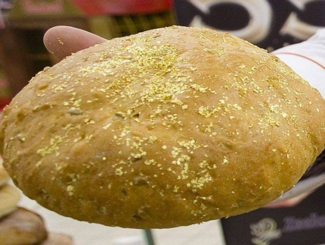
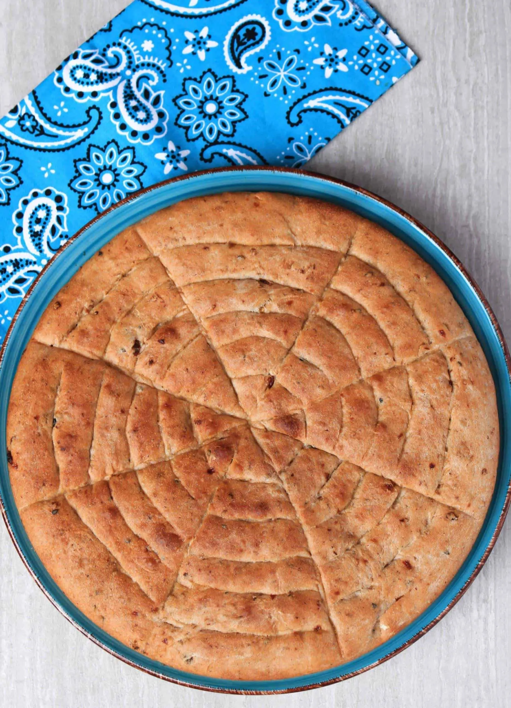
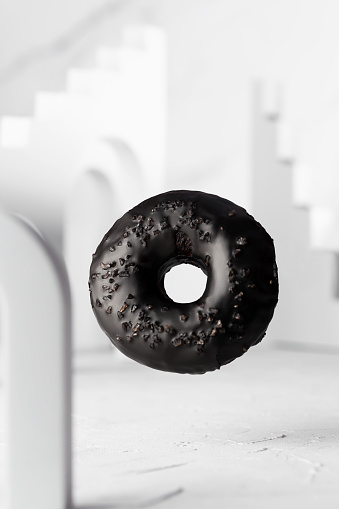
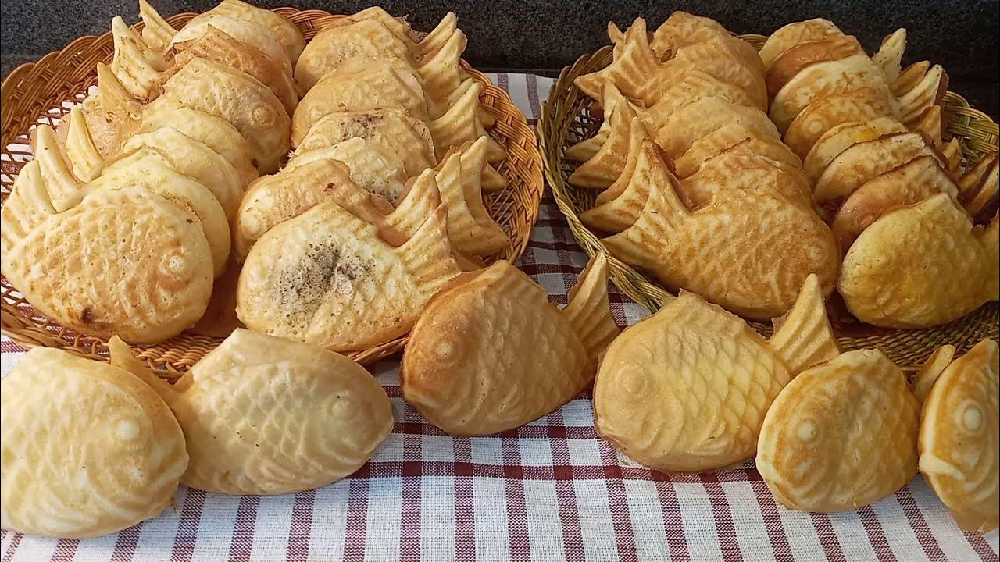
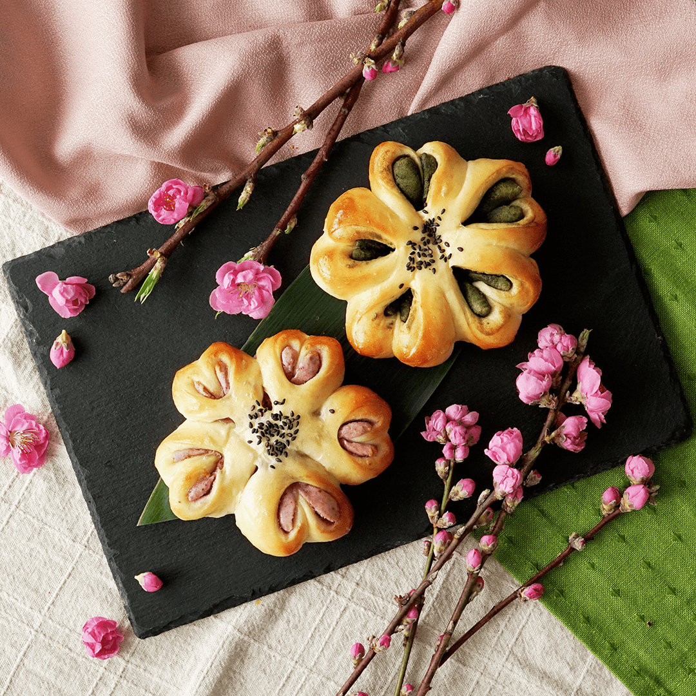
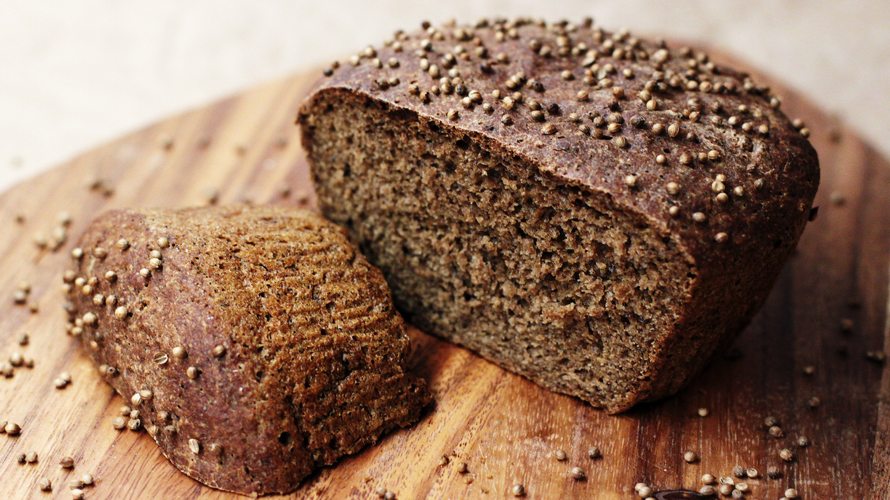
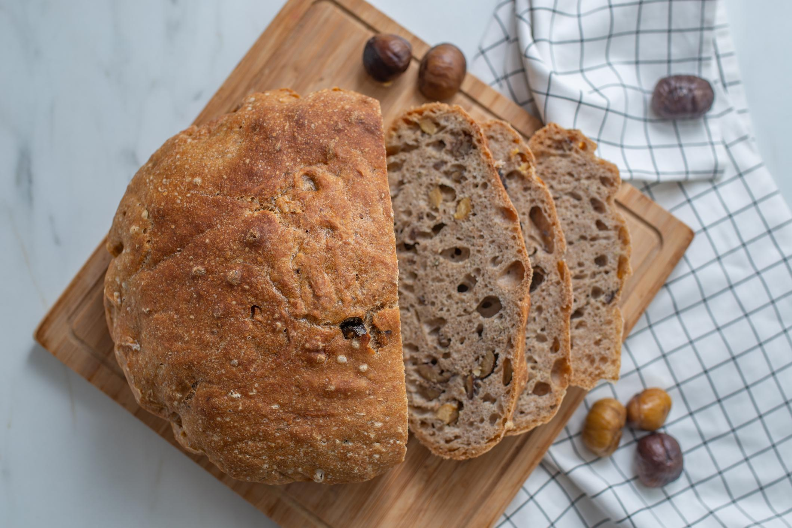
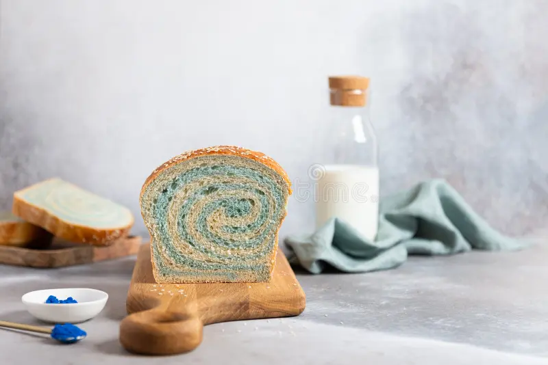

el top mas interesante del pan
1. Pan de Oro (Gold Leaf Bread) Japón

- Origen: Japón (aunque también se hace en Dubái y Europa)
- Ingredientes: Harina de trigo, levadura, agua, sal y láminas de oro comestible de 24 quilates
- Apariencia: Pan blanco o artesanal recubierto de oro brillante.
- Sabor: Igual que un pan normal, el oro no aporta sabor.
- Curiosidad: Es más una exhibición de lujo que una experiencia culinaria. Se vende en hoteles de alto nivel o como regalo exclusivo.
2. Himbasha - Etiopía / Eritrea

- Origen: África Oriental
- Ingredientes: Harina, levadura, cardamomo, semillas de sésamo, clavo, azúcar.
- Apariencia: Pan plano redondo con diseños grabados en la parte superior (en forma de cruz, espiral o rombos).
- Sabor: Dulzón y especiado.
- Curiosidad: Se prepara en celebraciones religiosas o bodas. Tiene un valor simbólico de unión y bendición.
3. Bagel Negro de Carbón - EE. UU. / Reino Unido

- Origen: Moderno (panaderías urbanas)
- Ingredientes: Harina, levadura, agua, sal y carbón activado
- Apariencia: Totalmente negro, opaco y misterioso.
- Sabor: Similar al bagel tradicional, pero con un toque ahumado.
- Curiosidad: El carbón activado es un detox natural (aunque su eficacia es debatida). Se volvió viral en Instagram.
4. Pan de Pescado (Fish Bread) - Corea del Sur

- Nombre local: Bungeoppang (붕어빵)
- Ingredientes: Masa dulce rellena de pasta de frijol rojo.
- Apariencia: Tiene forma de pez (parece una carpa dorada).
- Sabor: Crujiente por fuera, suave y dulce por dentro.
- Curiosidad: Es un snack callejero muy popular en invierno. Se cocina en moldes metálicos con forma de pez.
5. Sakura Anpan - Japón

- Origen: Japón
- Ingredientes: Masa dulce de pan, relleno de pasta de frijol rojo (anko) y flores de cerezo encurtidas.
- Apariencia: Pequeño, redondo, decorado con una flor de sakura en el centro.
- Sabor: Dulce y floral, con un leve toque salado por la flor encurtida.
- Curiosidad: Se come durante la temporada de hanami (floración de los cerezos).
6. Borodinsky - Rusia

- Origen: Rusia / Bielorrusia
- Ingredientes: Harina de centeno, melaza, semillas de cilantro.
- Apariencia: Pan oscuro, denso y húmedo, con costra suave.
- Sabor: Amargo-dulzón, con notas de especias.
- Curiosidad: Es uno de los panes de centeno más populares de Rusia, pero su receta es bastante compleja.
7. Balep Korkun - Tíbet

- Origen: Región del Himalaya
- Ingredientes: Harina de cebada, agua y levadura natural.
- Apariencia: Pan redondo, plano y grueso, parecido a una torta.
- Sabor: Suave, ligeramente ahumado si se cocina sobre piedra caliente.
- Curiosidad: Se cocina sin horno, en sartenes de hierro fundido o piedras calientes.
8. Pan de Castañas - Italia (Toscana)

- Nombre local: Castagnaccio
- Ingredientes: Harina de castañas, piñones, pasas, romero, aceite de oliva.
- Apariencia: Marrón oscuro, textura húmeda y compacta.
- Sabor: Terroso, dulce natural, con aroma a romero.
- Curiosidad: No lleva levadura. Es un postre típico del otoño en el norte de Italia.
9. Pan Azul de Espirulina - Varias regiones

- Origen: Panaderías modernas y saludables (EE. UU., Francia, etc.)
- Ingredientes: Harina, agua, levadura y espirulina azul natural
- Apariencia: Color azul cielo o azul intenso.
- Sabor: Similar al pan normal, con un toque marino muy sutil.
- Curiosidad: Rico en proteínas, antioxidantes y superalimento. Se vende como “pan saludable”.
10. Injera - Etiopía

- Origen: Etiopía / Eritrea
- Ingredientes: Harina de teff, agua, fermentación natural.
- Apariencia: Pan plano, delgado y con poros (como un panqueque de esponja).
- Sabor: Agrio por la fermentación.
- Curiosidad: No se usa cubiertos: el injera sirve como plato, cuchara y comida al mismo tiempo.